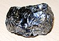

silicon

Definition: Silicon is a chemical element with the symbol Si and atomic number 14. It is a hard, brittle crystalline solid with a blue-grey metallic luster, and is a tetravalent metalloid and semiconductor. It is a member of group 14 in the periodic table: carbon is above it; and germanium, tin, lead, and flerovium are below it. It is relatively unreactive.
Source: Wikipedia
Wikipedia Page
Wikidata Page